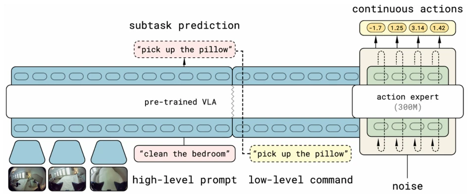
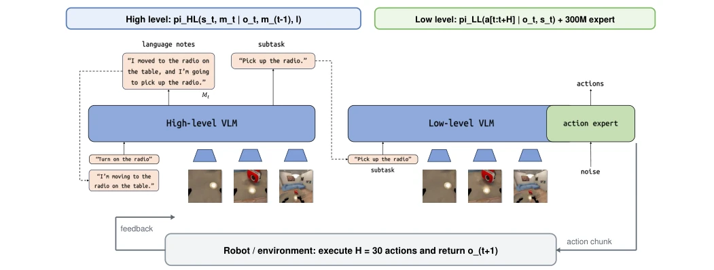
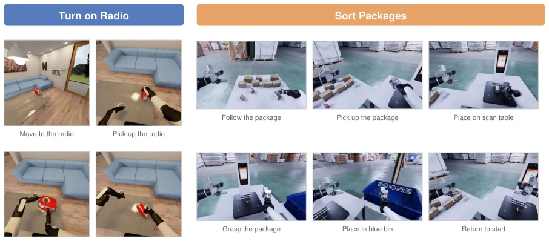

This paper equips VLA models with a "text diary," attempting to solve the memory loss problem in long-horizon tasks. The core idea is to decompose robot decision-making into a "brain" and "cerebellum," where the brain records progress using natural language, and the cerebellum is responsible for execution. This approach is indeed more transparent than pure end-to-end, allowing one to see exactly where the robot gets stuck, solving the pain point of debugging the "black box." However, this explicit language memory essentially relies on text generation capabilities; if the VLM itself suffers from severe hallucinations, the memory becomes "fabrication," misleading decision-making instead. Moreover, adding high-level reasoning inevitably brings latency, which may not be cost-effective for scenarios with high real-time requirements. The most problematic aspect is that it cannot solve physical-level "clumsiness," such as failing to press a button; relying solely on language memory cannot save it, and it might even retry repeatedly due to erroneous state recording. Overall, this is an attempt to strike a balance between "interpretability" and "performance," suitable for scenarios with high debugging needs, but still far from general robustness, belonging to an optimization that "treats symptoms rather than the root cause."
Existing VLA models such as RT-1 [5] and π0 [3] can handle short-horizon tasks but have significant deficiencies in long-horizon planning. The main issue lies in the non-Markovian nature of long-horizon tasks, where relying solely on current observations cannot maintain temporal consistency [14]. For example, the same scene may correspond to different decisions, depending on whether the history was successful. Existing methods such as HAMLET [9] or MemoryVLA [16] introduce memory but are mostly based on perceptual tokens or prompts, lacking semantic coherence and making it difficult to directly explain decision logic. Additionally, end-to-end fine-tuning may weaken the high-level semantic representation of VLMs, leading to policy degradation. This study aims to solve the problems of difficult cross-task combination generalization, error accumulation, and vague state tracking through explicit language memory, ensuring robots do not skip steps or repeat actions in multi-stage tasks, while providing explainable decision basis.
The method adopts a hierarchical architecture, decoupled into high-level VLM and low-level VLA. The high level is responsible for semantic reasoning, taking global instructions, current observations, and previous time-step language memory as input, and outputting updated memory and sub-task instructions. Memory adopts rolling compression rules, converting completed stages into past tense statements, retaining key states and next intentions, avoiding historical frame accumulation. The low-level VLA receives observations and sub-tasks, generating continuous action blocks. During training, an automated annotation pipeline is used to convert expert videos into memory and sub-task targets, training the two branches independently to avoid difficulties in loss weight tuning. During inference, memory is updated recursively, forming a closed loop. This design allows semantic planning and continuous control to have independent optimization objectives, while exposing internal states for easier analysis. The key innovation lies in using natural language as the primary memory carrier, rather than raw frames or implicit tokens, providing a compact and explainable semantic interface, making state tracking explicit.
Experiments were conducted on BEHAVIOR-1K [10], Genie Sim 3.0 [19], and real XLeRobot [17] platforms. The baseline is π0.5 [14]. The main metric is stage success rate. Results show that explicit language memory significantly improved long-horizon task performance, such as the radio task average success rate rising from 30% to 40%, and Genie single-package sorting rising from 41.7% to 63.9%. Qualitative analysis indicates that the memory mechanism effectively reduced cases of skipping steps, such as placing objects without pressing the button. However, the improvement in real robot short tasks is limited, and contact-intensive actions like "pressing buttons" still fail, indicating that language memory cannot compensate for insufficient low-level control precision. Additionally, high-level reasoning increases computational latency and relies on high-quality failure recovery data; future work needs to combine multimodal feedback.
其他图片Other Figures

Figure 1: Original illustration of the two-stage inference pattern in π0.5: a pretrained VLA predicts a

Figure 2: Explicit language-memory architecture. The original layout and observation frames from Fig. 3-1

Figure 3: Simulation task demonstrations extracted from the original experiments. Left: the BEHAVIOR-1K turning-on-radio stages. Right: representative Genie Sim 3.0 package-sorting stages. This corresponds to Fig. 4-1 in the source thesis.